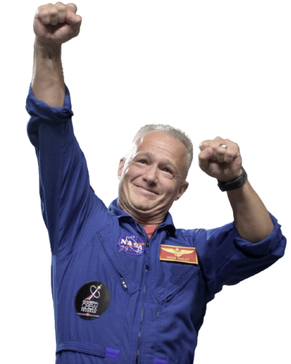

COMMANDER
DOUGLAS HURLEY
Douglas Gerald Hurley is an American engineer, former Marine Corps pilot and former NASA astronaut. He launched into space for the third time as commander of Crew Dragon Demo-2.


02
MEET YOUR CREW
COMMANDER
DOUGLAS HURLEY
Douglas Gerald Hurley is an American engineer, former Marine Corps pilot and former NASA astronaut. He launched into space for the third time as commander of Crew Dragon Demo-2.